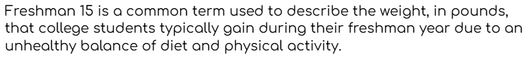
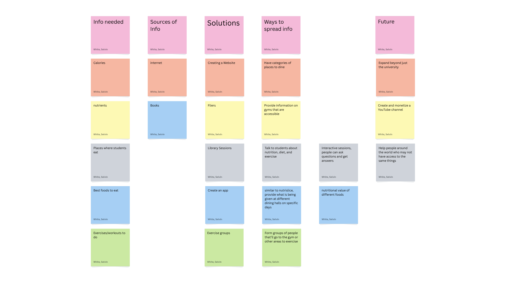
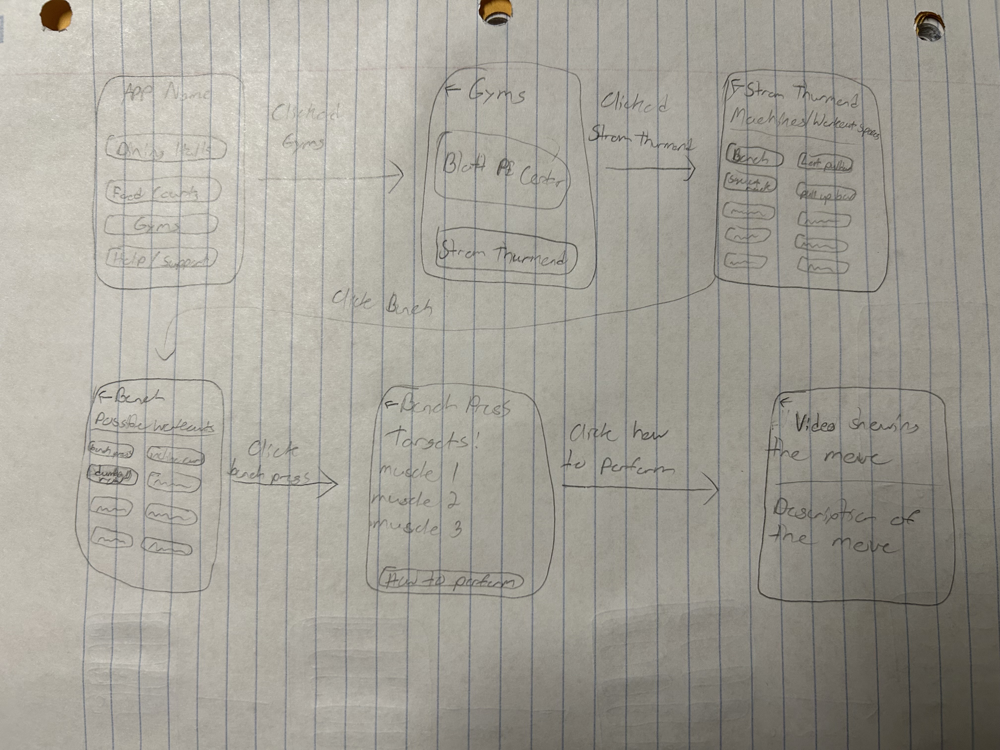

Highlighted projects
Problem Statement
Freshman 15 is a common term used to describe the weight, in pounds, that college students typically gain during their freshman year due to an unhealthy balance of diet and physical activity.
Affinity Diagram
This diagram is showing the different ideas I've come up with, with respect to the problem at hand. It includes things like what kind of information I need to gather, how I can gather it, as well as potential ways to spread the information.
Sketches
These sketches show what the different screens of the app could look like. They include the home screen, and many of the different screens that the user would interact with in order to find the information that they need to help them with either nutrition or exercise.
UNIX/LINUX Fundametals Project